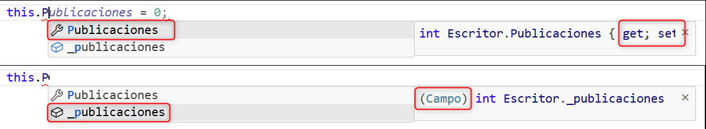
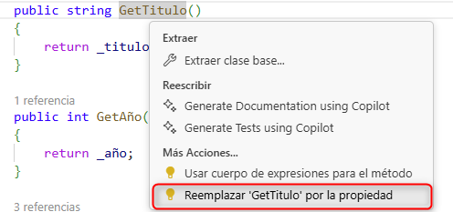
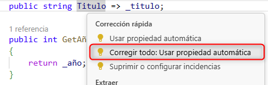

Unidad 13
Descargar estos apunte en pdf o html
Índice
Definiendo nuestra primera clase a través de CSharp
Definiendo tipos de datos en POO
Introducción
Repasemos a través del siguiente diagrama las definiciones y conceptos iniciales de POO que vimos en la unidad 10
Definiendo nuestra primera clase a través de CSharp
Información
Para definir una clase en C# seguiremos las convenciones de nomenclatura de identificadores de Microsoft para C#. Es muy importante conocerlas y seguirlas, pues todos los programadores del lenguaje la siguen y hace más fácil la lectura del código.
Cada lenguaje tiene sus propias convenciones y es imprescindible seguirlas si trabajamos en proyectos colaborativos. Es más, debemos adaptarnos a las convenciones de los proyectos en los que trabajemos, pues no siempre serán las mismas dependiendo de la empresa o del equipo de desarrollo. Por lo que si has tomado vicios, manías o TOCs, es mejor que los abandones a partir de ahora y seas escrupuloso con las convenciones siguientes.
Supongamos que queremos definir un tipo que represente libros.
Una posible representación UML del mismo podría ser:
Para dibujar los diagramas de clases de UML hemos seguido las convenciones de nombres y tipos de C#. Nos servirán de forma esquemática para sabes que queremos definir a partir del estándar de UML.
En la mayoría de lenguajes OO, para definir nuestra clase, seguiremos una plantilla similar a esta:
class <NombreDeLaClase>
{
<campos>
<constructor/es>
<accesores/mutadores>( o <propiedades en C#>)
<métodos>
}
Lee esto antes de seguir ✋
Es importante que pierdas un tiempo siguiendo los pasos descritos en el tema. Entendiendo el por qué de cada concepto para entender la posteriores refactorizaciones donde a través de simplificaciones añadidas en la sintaxis de los lenguajes Orientados a Objetos modernos quedan algunos conceptos ocultos o implícitos para que el código sea más legible y fácil de mantener.
Paso 1: Definir los campos (atributos en POO clásica)
Estos, no deben ser nunca accedidos desde fuera de clase. Para ello, antepondremos la cláusula private siempre. Con esto nos aseguraremos seguir el principio de encapsulación del que hablamos en la unidad 10.
Fíjate que hemos marcado dos campos con la propiedad de atributo de clase {readOnly} esto significa que, una vez creado el objeto, ya no se podrán modificar los valores de título, año y paginas.
Además, el convenio de C# es que los campos privados se escriben con _ al principio del nombre del campo y el resto del nombre en camelCase.
class Libro
{
// <campos>
private readonly string _titulo;
private readonly int _año;
private readonly int _paginas;
private int _paginasLeidas;
}
Paso 2: Definir los constructores / destructores de objetos
En C# el método constructor tiene el mismo nombre que la clase y no lleva tipo de retorno (Es implícito).
Tip
Si justo después del nombre de la clase pulsamos Clrl+. en VSCode. VSCode nos ofrecerá crear un constructor en la refactorización de código.
class Libro
{
// <campos>
private readonly string _titulo;
private readonly int _año;
private readonly int _paginas;
private int _paginasLeidas;
// <constructor/es>
public Libro(string titulo, int año, int paginas)
{
_titulo = titulo;
_año = año;
_paginas = paginas;
_paginasLeidas = 0; // Al crear cualquier libro, llevaré leidas 0 páginas.
}
}
Fíjate que aunque hemos marcado _titulo y _año como readonly (solo lectura) los podemos asignar a un valor inicial en el constructor. Esta es la única vez que los podremos asignar. En el resto de métodos únicamente podremos acceder a su valor.
Referencia implícita this
-
this es una referencia implícita a la instancia en memoria del objeto que en ese momento estamos creando o está accediendo a un método de la clase.
-
Nos puede ayudar en algunos lenguajes a diferenciar entre los identificadores de los campos y los parámetros de entrada del constructor si tuviesen el mismo identificador o nomrbe.
Imaginemos que el campo_añolo llamamosañosin la barra baja. El parámetro de entradaañoen el constructor se confundiría con el campo que también es accesible. Pero si usamosthis.año = añoya no hay confusión, puesthis.añose refiere al campo de la clase yañoal parámetro de entrada del constructor.
Constructor por defecto
Si no definimos ningún constructor, se define uno por defecto que nos permitirá crear instáncias de libro de la siguiente manera.
// El constructor por defecto, no recibe ningún parámetro que defina el estado inicial del objeto
Libro l = new ();
Sin embargo, si definimos un constructor concreto, dejará de estar disponible el constructor por defecto, a no ser que lo definamos explícitamente nosotros.
Pero cuidado, si lo hacemos, esto permitirá crear instancias del objeto libro a los valores default como muestra el objeto instanciado en el diagrama.
Aviso
Estaríamos dando la oportunidad de crear objetos libro sin un estado apropiado. Por tanto, no es conveniente utilizar constructores por defecto, a no ser que por alguna razón específica, lo definamos nosotros explícitamente y dispongamos de otras formas de crear nuestro objetos.
Constructor copia
Se trata de una aproximación inicial al clonado de objetos mutables. Es un constructor optativo, que copiará el estado de una instancia de un objeto de la clase que lo define.
Nota
En un principio vamos a implementarlo como un constructor más desde el punto de vista de conceptual, o como lo hace C++. Pero esta, no es la forma correcta de implementarlo en C# y por eso, más adelante, veremos que para realizar copias en C# usaremos un método especial llamado Clone() que se se llamará también clone() o copy() dependiendo del lenguaje OO que estemos usando.
Una posible implementación del mismo para nuestro ejemplo que podemos lleva a cualquier lenguaje OO puede ser....
// Entra un objeto libro referencia do por l que querremos copiar.
public Libro(Libro l)
{
// No usamos this porque no hay posibilidad de confusión.
_titulo = l._titulo;
_año = l._año;
_paginas = l._paginas;
_paginasLeidas = l._paginasLeidas;
}
Recordemos del tema 5 que si hiciésemos el siguiente código...
Libro l1 = new ("Code Complete 2", 2004, 960);
// l2 y l1 son el mismo objeto
l2 = l1;
// l3 y l1 son objetos diferentes.
l3 = new Libro(l1);
l2.Lee(10); // Modifica l2 y por ende l1 dejando leidas 10 páginas del libro.
l3.Lee(25); // Modifica l3 que es una copia en memoria de l1, no afectando por tanto al estado del objeto l1.
Destructor/es
Cuando un objeto deja de ser referenciado por algún identificador, al cabo de tiempo es eliminado de la memoria por el Recolector de Basura (Garbage Collector o GC). Esta eliminación la hará llamando a su destructor por defecto, el cual nosotros podremos redefinir de tal manera que deje el estado del objeto a unos valores que no permitan usarlo más.
Nota
Este paso de definición de nuestra clase, nos lo saltaremos en todos los lenguajes gestionados, esto es, que dispongan de un GC para la eliminación de objetos. Solo se definirá en lenguajes no gestionados como C++.
Si lo tuviésemos que redefinir, no le aplicaremos ningún modificador de acceso (public, private).
class Libro
{
// <campos>
// <constructor/es>
// <destructor>
~Libro()
{
// Los otros valores son readonly y no podemos modificarlos.
_paginas = int.MinValue;
_paginasLeidas = int.MinValue;
}
}
Paso 3: Definir los accesores y mutadores
Usaremos, para entender el concepto, la forma de hacerlo a través de métodos específicos de acceso y modificación de forma similar a como hacen algunos lenguajes orientados a objetos como Java, JavaScript, Go, Rust, PHP o C++.
Método accesor o getter
Para definir un accesor, crearemos un método con el prefijo Get<idCampo> seguido del nombre del campo eliminando la barra baja y escribiendo el resto del nombre en PascalCasing (la primera letra de cada palabra en mayúscula). Por ejemplo, para el campo _titulo el método sería string GetTitulo().
Método mutador o setter
Para definir el mutador, crearemos un método con el prefijo Set<idCampo> seguido del nombre del campo eliminando la barra baja y escribiendo el resto del nombre en PascalCasing. Por ejemplo, para el campo _titulo el método sería void SetTitulo(string titulo).
Tips de diseño de 'getters' y 'setters'
- No tengo porqué definirlos todos, solo si los necesito o me los piden.
- Si el campo es
readonlysolo podrá haber accesor (getter). - Los accesores (getters) llevarán el modificador
publicpor defecto. - Los mutadores (setters) llevarán el modificador
privatepor defecto para asegurar la encapsulación y solo seránpublicsi fuese necesario, siempre y cuando nos aseguremos que el objeto queda en buen estado. - En lugar de usar directamente los campos dentro de los métodos y constructores, intentaremos usar los getters y setters definidos.
Nuestra clase Libro quedaría de la siguiente manera:
class Libro
{
// <campos>
// <constructor/es>
public Libro(string titulo, int año, int paginas)
{
_titulo = titulo;
_año = año;
_paginas = paginas;
SetPaginasLeidas(0);
}
public Libro(Libro l)
{
// Constructor Copia. EN los lenguajes OO modernos se ha sustituido por
// un método especial denominado Clone o Copy, según en lenguaje. (Lo abordaremos más adelante)
_titulo = l.GetTitulo();
_año = l.GetAño();
_paginas = l.GetPaginas();
SetPaginasLeidas(l.GetPaginasLeidas());
}
// <accesores/mutadores>
public string GetTitulo()
{
return _titulo;
}
public int GetAño()
{
return _año;
}
public int GetPaginas()
{
return _paginas;
}
public int GetPaginasLeidas()
{
return _paginasLeidas;
}
private void SetPaginasLeidas(int paginas)
{
_paginasLeidas = paginas;
}
}
Paso 4: Definir métodos u operaciones de la clase
Desde cualquier método de instáncia, podremos acceder a los campos y accesores/mutadores de la clase. Ya sea a través de this o 'inferido' si no hay un parámetro formal con el mismo id. Sin embargo, trataremos de usar los accesores/mutadores en lugar de los campos.
Para nuestro ejemplo tendremos...
class Libro
{
// <campos>
// <constructor/es>
// <accesores/mutadores>
// <métodos>
public int Lee(int paginas)
{
int leidas = Math.Clamp(paginas, 0, GetPaginas() - GetPaginasLeidas());
SetPaginasLeidas(GetPaginasLeidas() + leidas);
return leidas;
}
public int PorcentajeLeido()
{
return Convert.ToInt32(GetPaginasLeidas() * 100D / GetPaginas());
}
public string ATexto()
{
return $"""
Título: {GetTitulo()}
Año: {GetAño()}
Páginas: {GetPaginas()}
""";
}
}
Paso 5: Crear un pequeño test para nuestra clase (Opcional)
En este caso, vamos a hacer un pequeño programa que cree una instancia de un objeto libro y posteriormente lo lea de 300 en 300 páginas.
// Creo el libro.
Libro libro = new ("Code Complete 2", 2004, 960);
// Muestro la descripción de mi libro
Console.WriteLine(libro.ATexto());
// Mientra pueda leer alguna página (máximo 300)
// muestro las páginas leidas y el porcentaje de lo que llevo leído del libro.
const int MAXIMO_PAGINAS_A_LEER = 300;
int leidas;
while((leidas = libro.Lee(MAXIMO_PAGINAS_A_LEER)) > 0)
{
Console.WriteLine($"leidas: {leidas} {libro.PorcentajeLeido()}%");
}
Resumen de directrices generales de definición de clases
Ejemplo:
Junto a la clase Libro anterior, vamos a modelar la clase Escritor suponiendo que un escritor tiene un nombre, un año de nacimiento y un número de publicaciones.
Además del constructor y los accesores y mutadores para sus campos, vamos a definir el método descripción que me muestre sus datos y método Libro Escribe(string titulo) donde el escritor creará un libro con el título recibido de entre 400 y 800 páginas.
Intenta modelarla e implementarla tu mismo, antes de ver la propuesta de solución.
Podría seguir el diagrama de clases UML adjunto.
La implementación propuesta siguiendo los pasos y criterios descritos sería la siguiente (trata de implementarla antes de ver la solución):
class Escritor
{
private readonly string _nombre;
private readonly int _nacimiento;
private int _publicaciones;
public string GetNombre()
{
return _nombre;
}
public int GetNacimiento()
{
return _nacimiento;
}
public int GetPublicaciones()
{
return _publicaciones;
}
private void SetPublicaciones(int publicaciones)
{
_publicaciones = publicaciones;
}
public Escritor(string nombre, int nacimiento)
{
_nombre = nombre;
_nacimiento = nacimiento;
SetPublicaciones(0);
}
// No hace falta definir el constructor copia pues no vamos a usarlo.
public string ATexto()
{
return $"""
Nombre: {GetNombre()}
Nacimiento: {GetNacimiento()}
Publicaciones: {GetPublicaciones()}
""";
}
public Libro Escribe(string titulo)
{
// Para establecer el rango de páginas de sus libros, hemos usado un nuevo tipo
// añadido en C#8 denominado rango (por ver posibilidades del lenguaje).
// Aunque podríamos haber definido símplemente 2 enteros.
// Este rango podría ser incluso un campo que defina una característica de nuestros
// objetos escritor.
Range r = 400..800;
// Incremento el número de publicaciones del escritor.
SetPublicaciones(GetPublicaciones() + 1);
// Creo un líbro, con el año actual y un número de páginas aleatoria en el rango.
return new (
titulo: titulo,
año: DateTime.Now.Year,
paginas: new Random().Next(r.Start.Value, r.End.Value + 1));
}
}
Fíjate en el método ...
class Escritor
{
// ...
public Libro Escribe(string titulo)
{
// ...
return new Libro(...)
}
// ...
}
Es un método del objeto Escritor que crea un objeto de una clase diferente Libro. Realmente está construyendo una instancia de un objeto Libro. A este tipo de métodos se les denomina método factoría simple porque crea 'construye' como una fábrica un objeto de un tipo diferente al del objeto que lo invoca.
Sustituyendo los métodos accesores y mutadores por propiedades
Aunque implementar métodos accesores y mutadores es una forma válida de implementar la encapsulación en cualquier lenguaje. Algunos lenguajes, como C#, Python o Swift nos ofrecen otra forma de hacerlo a través del concepto de propiedad. Estas son una forma de definir un campo con un getter y un setter asociados, pero con una sintaxis más limpia y fácil de usar. A este tipo de simplificaciones del código se les denomina Syntactic Sugar, que en español se traduce como azúcar sintáctico.
Pasaremos de este esquema...
class Clase
{
private <Tipo> _idCampo;
private <Tipo> Get<IdCampo>()
{
return _idCampo;
}
public void Set<idCampo>(<Tipo> idCampo)
{
this._idCampo = idCampo;
}
}
a esta otra sintaxis.
class Clase
{
private <Tipo> _idCampo;
<Tipo> <IdCampo> {
set
{
_idCampo = value;
}
get
{
return _idCampo;
}
}
}
En la nueva sintaxis, aparece una nueva palabra reservada value que hace referencia al valor que se le asigna a la propiedad. Es como el parámetro de entrada del setter, pero sin necesidad de definirlo explícitamente y tomará el tipo del campo asociado a la propiedad.
Nota
La sintaxis anterior tiene adaptaciones conforme ha ido evolucionando en lenguaje, para simplificar al máximo su uso, según casos de uso. Más adelante, una vez tratemos el concepto de propiedad, abordaremos dichas simplificaciones.
Veamos cómo aplicar y usar la nueva sintaxis a traves de la clase Escritor que acabamos de implementar en el ejemplo.
A través de ella vamos a ver la forma de usar propiedades y cómo llevar el concepto a las versiones más modernas del lenguaje.
class Escritor
{
private readonly string _nombre;
private readonly int _nacimiento;
private int _publicaciones;
Fíjate que hemos implementado las propiedades solo con el get porque los campos asociados son readonly y el id de la propiedad es el mismo que el del campo asociado pero sin la barra baja y en PascalCasing por ejemplo de _nombre a Nombre.
public string Nombre
{
get
{
return _nombre;
}
}
public int Nacimiento
{
get
{
return _nacimiento;
}
}
Para el campo _publicaciones que no es readonly definimos tanto el get como el set. Fíjate que, por defecto y si no nos especifican lo contrario, hemos puesto el set como private para que solo pueda ser modificado desde dentro de la clase y así asegurar la encapsulación.
public int Publicaciones
{
get
{
return _publicaciones;
}
private set
{
_publicaciones = value;
}
}
}
Usando las propiedades definidas
Para nosotros sintácticamente será como si estuviéramos accediendo directamente al campo, pero con el nombre en PascalCasing. Sin embargo, se estará ejecutando el código definido en el cuerpo de la propiedad, como sucedía al definir los métodos.
Posiblemente ya te hayas dado cuenta pero normalmente, los IDEs o editores como el VSCode nos ofrecerá ayuda ofreciéndonos los miembros de un objetos accesibles en el contexto. Por ejemplo, si dentro de un método de instancias escribimos this.p el ide nos mostrará los siguente...

Fíjate que la propiedad (Publicación) tiene un icono asociado de una llave inglesa y por el contrario el campo tiene asociado un icono con una caja azul y además nos indicará que se trata de una campo. Por ejemplo, si completamos el código de la clase Escritor usando la propiedades definidas. Tendremos el siguiente código...
class Escritor
{
// ... código omitido por abreviar
public Escritor(string nombre, in DateTime nacimiento)
{
_nombre = nombre;
_nacimiento = nacimiento;
Publicaciones = 0; // Se estará ejecutando el el set la propiedad Publicaciones
}
public string ATexto()
{ // Usamos las propiedades definidas en lugar de los campos.
return $"""
Nombre: {Nombre}
Nacimiento: {Nacimiento}
Publicaciones: {Publicaciones}
""";
}
public Libro Escribe(string titulo)
{
Range r = 400..800;
// Cambiamos SetPublicaciones(GetPublicaciones() + 1); por...
Publicaciones++;
return new (titulo: titulo, año: DateTime.Now.Year,
paginas: new Random().Next(r.Start.Value, r.End.Value + 1));
}
}
Sentido del uso de propiedades
En la unidad 10 y a lo largo de esta unidad hemos hablado del concepto de encapsulación y que se conseguía haciendo los campos privados (private) y definiendo métodos accesores y mutadores o propiedades. Pero, vamos recapitular y más allá de cómo se definen vamos a tratar de preguntarnos por su sentido.
Antes de nada vamos a recapitular los los Objetivos de la encapsulación:

- Evitar que un cliente de mis clases puedan dejar objetos instanciados de las mismas en un estado inadecuado.
- Ocultar detalles de la implementación de una clase.
- Disminuir el acoplamiento, esto es, realizar cambios o actualizaciones en la clases sin preocuparnos cómo están siendo usadas.
Pero... ¿Realmente qué ganamos con hacer SetPublicaciones(0); o Publicaciones = 0; en lugar de _publicaciones = 0; dentro de la propia clase?.
Es una pregunta legítima, pues si examinamos el código de
Publicaciones = 0;
realmente está ejecutando
public int Publicaciones
{
// ... código omitido por abreviar
private set
{
_publicaciones = value;
}
}
que es cómo hacer _publicaciones = 0;. Entonces, ¿por qué no usar directamente el campo?.
Realmente el ejecutar un bloque de instrucciones que asigna el valor de una campo a otro, cobra sentido para mantener la encapsulación. Imagina que por error asignamos un valor negativo a _publicaciones por que estamos haciendo un _publicaciones--; inadecuado. Si lo hacemos directamente, el objeto quedará en un estado inadecuado, pues un Escritor no puede tener publicaciones negativas. Sin embargo, si usamos la propiedad Publicaciones y definimos su set de la siguiente manera:
public int Publicaciones
{
// ... código omitido por abreviar
private set
{
Debug.Assert(value >= 0, "El número de publicaciones no puede ser negativo");
_publicaciones = value;
}
}
De esta manera, al poder ejecutar un bloque de instrucciones previo a la asignación o acceso, podemos hacer transformaciones, comprobaciones y lanzar errores si el valor que se le asigna no es válido. Incluso en un momento dado podríamos dejar el set público y permitir que el cliente del objeto pueda asignar un valor a la propiedad.
Pero, ¿Hacer dejar set publico tiene sentido?...
Permitiría que un cliente del objeto Escritor estableciese que ese escritor ha escrito un libro sin llamar al método Escribe(string titulo). Con lo que el estado del objeto Escritor podría ser inadecuado también por tener más publicaciones de las que realmente ha escrito. Por tanto, no es conveniente dejar el set público en este caso.
Ante la duda, ya comentamos que por defecto los set deberían ser privados. Esto también es debido a que si lo dejamos público sin sentido, puede que un montón de clases clientes de un objeto Escritor empiecen a establecer el número de publicaciones. Esto también crea acoplamiento pues si de repente cambiamos de idea y lo queremos hacer privado, quizá su acceso esté ya en un montón de clases clientes que no podremos modificar. Por tanto, si no tenemos claro que el set de una propiedad debe ser público, mejor lo dejamos privado.
Este tipo de reflexiones son las que deberemos hacernos al definir las propiedades, evitando hacer las definiciones de forma mecánica y sin pensar.
Propiedades calculadas
Son Getters o propiedades que no tienen un campo asociado, sino que calculan su valor a partir de otros campos o propiedades del objeto. Por ejemplo, en la clase Escritor podríamos definir una propiedad Edad que calcule la edad del escritor a partir de su año de nacimiento y el año actual.
En el diagrama de clases UML, la propiedad Edad se representaría con un método Getter sin campo asociado donde el nombre va precedido del caracter /.
class Escritor
{
public int Edad
{
get
{
return DateTime.Now.Year - Nacimiento;
}
}
}
Simplificando la definición de propiedades
Propiedades con cuerpo de expresión
En la unidad 7 ya se mencionaron de pasada. Una forma de simplificar la definición de propiedades es usar miembros con cuerpo de expresión. Para srecordar podemos simplificar diciendo que son aplicables en aquellos métodos que estén formados por una única expresión o instrucción en forma de expresión independientemente de si se evalúan algo o a void.
En ellos, eliminaremos el cuerpo del método (el bloque de llaves) y dejaremos la expresión precedida del operador => y quitando return si hubiera. Por ejemplo ...
Pasaremos de este esquema...
public int Suma(int a, int b)
{
return a + b;
}
a este otr otro...
public int Suma(int a, int b) => a + b;
Veamos cómo sería la sintaxis si el miembro es una propiedad. Para ello, vamos a partir de una clase que tiene dos campos y sus respectivas propiedades de acceso que no usan 'cuerpo de expresión'.
Pasaremos de este esquema...
private readonly int _campo1;
private string _campo2;
public int Campo1
{
get
{
return _campo1;
}
}
public string Campo2
{
get
{
return _campo2;
}
private set
{
_campo2 = value;
}
}
a esta otra sintaxis más reducida...
private readonly int _campo1;
private string _campo2;
public int Campo1 => _campo1;
public string Campo2
{
get => _campo2;
private set => _campo2 = value;
}
Fíjate que la sintaxis es más simple aún si usamos cuerpos de expresión para la propiedad de un campo de solo lectura porque no hace falta ni poner el get.
Propiedades 'autoimplementadas' o 'automáticas'
Algunos lenguajes como C# usan el concepto de propiedades autoimplementadas que hacen que la declaración de propiedad sea más concisa cuando no se requiere ninguna lógica adicional en los descriptores de acceso de la propiedad o estemos creando así clases 'ligeras'.
Al declarar una propiedad autoimplementada, el compilador crea por nosotros un campo de respaldo privado y anónimo al que solamente puede obtenerse acceso a través de los descriptores de acceso get y set de la propiedad.
Veamos a través de un ejemplo de definición de una clase Persona simple, cómo este 'syntactic sugar' hace que la definición de nuestra clase sea más concisa. Supongamos pues el siguiente código ...
class Persona
{
private readonly string _dni;
private string _nombre;
public string Dni
{
get
{
return _dni;
}
}
public string Nombre
{
get
{
return _nombre;
}
private set
{
_nombre = value;
}
}
}
el código anterior con las propiedades automáticas pasaría de 25 a 5 líneas y tendría la misma funcionalidad...
class Persona
{
public string Dni { get; }
public string Nombre { get; private set; }
}
Fíjate que ya no definimos los campos privados, estará implícito al definir la propiedad. Además, para las propiedades de solo lectura autoimplementadas eliminaremos el modificador set. Esto nos permite establecer el valor de la propiedad solo en el constructor, lo que es útil para mantener la inmutabilidad.
Esta sintaxis será la más concisa, si no vamos ha realizar comprobaciones o transformaciones en los setter y getters.
Aplicando las simplificaciones a nuestras clases de ejemplo
¿Cómo quedaría la clase Escritor aplicando estas simplificaciones?
class Escritor
{
private int _publicaciones;
public string Nombre { get; }
public int Nacimiento { get; }
public int Edad => DateTime.Now.Year - Nacimiento; // Propiedad calculada
public int Publicaciones
{
get => _publicaciones;
private set
{
Debug.Assert(value >= 0, "El número de publicaciones no puede ser negativo.");
_publicaciones = value;
}
}
public Escritor(string nombre, int nacimiento)
{
Nombre = nombre; // Las propiedades autoimplementadas
Nacimiento = nacimiento; // en el constructor será el único sitio donde se
Publicaciones = 0; // puedan asignar.
}
public string ATexto() => $"""
Nombre: {Nombre}
Nacimiento: {Nacimiento}
Publicaciones: {Publicaciones}
""";
public Libro Escribe(string titulo)
{
Range r = 400..800;
Publicaciones++;
return new (
titulo: titulo,
año: DateTime.Now.Year,
paginas: new Random().Next(r.Start.Value, r.End.Value + 1));
}
}
Refactorizando con VSCode
¿Cómo quedaría la clase Libro que implementamos al principio de la unidad utilizando propiedades simplificadas y cuerpos de expresión?
Para hacer este proceso vamos a aplicar la refactorización contextual de código con Ctrl+. que nos ofrece VSCode. Para ello, puedes partir de la implmentación de este enlace (Libro.cs)
1. Convertir un único Getter de un campo de solo lectura en una propiedad:
Nos situamos en el método GetTitulo() y pulsamos Ctrl+.. Seleccionamos la opción Reemplazar 'GetTitulo' por la propiedad y nos sustituirá el método por una propiedad con el cuerpo de expresión en todo el código del proyecto.

2. Convertir una propiedad normal en automática (desaparece el campo sociado):
Nos situamos sobre el identificador de la propiedad que en la imagen de ejemplo es Titulo y pulsamos Ctrl+.. Seleccionamos la opción Usar propiedad automática y nos sustituirá la propiedad por una propiedad automática, eliminando el campo asociado _titulo.

Podemos repetir los puntos 1 y 2 con Año y Paginas.
3. Convertir un Getter y Setter en una propiedad:
Igual que en el punto 1, nos situamos en el método GetPaginasLeidas() y pulsamos Ctrl+.. Pero seleccionamos la opción Reemplazar 'GetPaginasLeidas' y 'SetPaginasLeidas' por la propiedad para que reemplace ambos métodos.

Pero ahora cómo vamos a añadir control de cambios en el setter no definiremos una propiedad automática, sino que pasaremos de ...
public int PaginasLeidas { get => _paginasLeidas; set => _paginasLeidas = value; }
a comprobar que no leamos páginas negativas o más páginas de las que tiene el libro. Por tanto, definiremos la propiedad de la siguiente manera:
public int PaginasLeidas
{
get => _paginasLeidas;
set
{
Debug.Assert(
condition: value >= 0,
message: "Páginas leídas negativas.");
Debug.Assert(
condition: value <= Paginas,
message: "Páginas leídas mayor que el total de páginas.");
_paginasLeidas = value;
}
}
4. Convertir un métodos candidatos a propiedad calculada:
Por ejemplo el método de de la clase Libro:
public int PorcentajeLeido()
{
return Convert.ToInt32(GetPaginasLeidas() * 100D / GetPaginas());
}
vemos que al ser una única expresión y no recibir ningún tipo de parámetro es candidato a convertirse en una propiedad calculada. Para ello, nos situamos en el método y pulsamos Ctrl+.. Seleccionamos la opción Reemplazar 'PorcentajeLeido' por la propiedad y nos sustituirá el método por una propiedad con el cuerpo de expresión siguiente...
public int PorcentajeLeido => Convert.ToInt32(PaginasLeidas * 100D / Paginas);
En el siguiente enlace (Libro.cs) puedes descargar la clase libro donde hemos aplicado las refactorizaciones anteriores.
🚀 Ampliación opcional:
¿Serías capaz de reconoces los elementos de de nuestra definición de Libro en C# en otros lenguajes cómo Python o Kotlin?
Python:
class Libro:
def __init__(self, titulo: str, anyo: int, paginas: int):
self._titulo = titulo
self._anyo = anyo
self._paginas = paginas
self._paginas_leidas = 0
@property
def titulo(self) -> str:
return self._titulo
@property
def anyo(self) -> int:
return self._anyo
@property
def paginas(self) -> int:
return self._paginas
@property
def paginas_leidas(self) -> int:
return self._paginas_leidas
@paginas_leidas.setter
def paginas_leidas(self, value: int):
assert value >= 0, "El número de páginas leídas no puede ser negativo."
assert value <= self.paginas, "El número de páginas leídas no puede ser mayor que las del libro."
self._paginas_leidas = value
@property
def porcentaje_leido(self) -> int:
if self.paginas == 0:
return 100
return int(self.paginas_leidas * 100 / self.paginas)
def lee(self, paginas: int) -> int:
leidas = max(0, min(paginas, self.paginas - self.paginas_leidas))
self.paginas_leidas += leidas
return leidas
def a_texto(self) -> str:
return f"""
Título: {self.titulo}
Año: {self.anyo}
Páginas: {self.paginas}
Páginas leídas: {self.paginas_leidas}
"""
def main():
libro = Libro("Code Complete 2", 2004, 960)
print(libro)
MAXIMO_PAGINAS_A_LEER = 300
while (leidas := libro.lee(MAXIMO_PAGINAS_A_LEER)) > 0:
print(f"leidas: {leidas} {libro.porcentaje_leido}%")
if __name__ == "__main__":
main()
Kotlin:
import kotlin.math.min
class Libro(
val titulo: String,
val anyo: Int,
val paginas: Int
) {
var paginasLeidas: Int = 0
set(value) {
require(value >= 0) { "El número de páginas leídas no puede ser negativo." }
require(value <= paginas) { "El número de páginas leídas no puede ser mayor que las del libro." }
field = value
}
val porcentajeLeido: Int
get() {
if (paginas == 0) return 100
return (paginasLeidas * 100.0 / paginas).toInt()
}
fun lee(paginasALeer: Int): Int {
val leidas = min(paginasALeer, paginas - paginasLeidas).coerceAtLeast(0)
paginasLeidas += leidas
return leidas
}
override fun toString(): String {
return """
Título: $titulo
Año: $anyo
Páginas: $paginas
Páginas leídas: $paginasLeidas
""".trimIndent()
}
}
fun main() {
val libro = Libro("Code Complete 2", 2004, 960)
println(libro)
val maximoPaginasALeer = 300
while (true) {
val leidas = libro.lee(maximoPaginasALeer)
if (leidas == 0) break
println("leidas: $leidas ${libro.porcentajeLeido}%")
}
}
Ejemplo:
Vamos a definir una clase en C# para simular el comportamiento de un motor de gasolina, encapsulando sus propiedades y funcionalidades principales. Para ello, crearemos la clase MotorGasolina que cumplirá con las siguientes especificaciones:
-
Campos y Propiedades:
Cilindrada(entero): Representa la cilindrada del motor en centímetros cúbicos (cc). Debe ser una propiedad pública de solo lectura, inicializada únicamente a través del constructor.Cilindros(entero): Indica el número de cilindros del motor. También debe ser una propiedad pública de solo lectura, establecida en el constructor.Revoluciones(entero): Almacena las revoluciones por minuto (RPM) actuales del motor. Con las condiciones siguientes:- No puede tener un valor negativo.
- No puede superar un máximo calculado como
Cilindrada * Cilindros * 10.
Encendido(booleano): Indica si el motor está encendido o apagado. Generaremos un error si se intenta cambiar el estado del motor a uno que ya tiene.Consumo(double): Una propiedad que calcula el consumo de combustible en "L/100km" basándose en la siguiente fórmula:
Estado(string): Una propiedad que devuelve una cadena de texto multilínea con el estado actual del motor, incluyendo cilindrada, cilindros, revoluciones, estado de encendido y consumo (formateado a dos decimales).
-
Métodos:
Enciende(): Cambia el estado del motor a encendido y establece las revoluciones a un ralentí de 800 RPM.Apaga(): Cambia el estado del motor a apagado y establece las revoluciones a 0 RPM.DarGas(int revoluciones): Aumenta las revoluciones actuales según el parámetrorevolucionesespecificado.QuitarGas(int revoluciones): Disminuye las revoluciones actuales según el parámetrorevoluciones. Las revoluciones nunca deben bajar del ralentí (800 RPM) mientras el motor esté encendido.
-
Programa de Prueba (
Program.cs):Crea un programa principal (
Main) para demostrar el funcionamiento de la claseMotorGasolinacon la siguiente secuencia de acciones:- Crea una objeto motor con 1600cc y 4 cilindros.
- Muestra el estado inicial del motor.
- Enciende el motor y muestra su nuevo estado.
- Aumenta el régimen del motor en 2000 RPM y muestra el estado.
- Disminuye el régimen del motor 1000 RPM y muestra el estado.
- Finalmente, apaga el motor y muestra su estado final.
Vamos explicar el proceso de definición de la clase en C# pero puedes descargar el código completo de la misma de ets enlace MotorGasolina.cs.
Empezaremos pues definiendo el estado con las propiedades de solo lectura automáticas y aquellos campos que no se pueden definir como propiedades automáticas, como _encendido y _revoluciones por tener control al establecer su valor.
public int Cilindrada { get; }
public int Cilindros { get; }
private bool _encendido;
private int _revoluciones;
Para definir las propiedades de Revoluciones y Encendido puedo usar la refactorización de VSCode que hemos visto anteriormente. Por ejemplo, nos situamos encima del campo _encendido y pulsamos Ctrl+.. Seleccionamos la opción Encapsular campo 'Encendido' y usar la propiedad. nos generará el siguiente código:
public bool Encendido { get => _encendido; set => _encendido = value; }
que cambiaremos por ...
public bool Encendido
{
get => _encendido;
private set
{
Debug.Assert(
condition: value != _encendido,
message: "El motor ya está en el estado solicitado.");
_encendido = value;
}
}
un proceso similar haremos con el campo _revoluciones quedando así:
public int Revoluciones
{
get => _revoluciones;
private set
{
int maxRevoluciones = Cilindrada * Cilindros * 10;
Debug.Assert(
condition: value >= 0 && value <= maxRevoluciones,
message: $"Las revoluciones deben estar entre 0 y {maxRevoluciones}.");
_revoluciones = value;
}
}
Las proiedades calculadas Consumo y Estado las definiremos cuerpo de expresión y multilínea a partir de el valor de otras propiedades. Fíjate que no accedemos al valor de los campos directamente, sino a través de las propiedades que hemos definido.
public double Consumo => Revoluciones / 500.0 * (Cilindrada / 1000.0) * Cilindros * 0.2;
public string Estado => $"""
Cilindrada: {Cilindrada} cc
Cilindros: {Cilindros}
Revoluciones: {Revoluciones} RPM
Encendido: {Encendido}
Consumo: {Consumo:F2} L/100km
""";
Definimos el único constructor de la clase, que inicializa las propiedades de solo lectura y los campos privados. Fíjate que el campo _revoluciones se inicializa a 0 y el campo _encendido a false pero no usamos las propiedades porque, por ejemplo, produciría un error al intentar establecer el estado del motor a apagado cuando ya lo está.
public MotorGasolina(int cilindrada, int cilindros)
{
Cilindrada = cilindrada;
Cilindros = cilindros;
_revoluciones = 0;
_encendido = false;
}
Los métodos o operaciones que realiza el motor las podemos definir de la siguiente manera según las especificaciones:
public void Enciende()
{
Encendido = true;
Revoluciones = 800;
}
public void Apaga()
{
Encendido = false;
Revoluciones = 0;
}
Por último, los métodos DarGas(int revoluciones) y QuitarGas(int revoluciones) que aumentan o disminuyen las revoluciones del motor, asegurando que no se bajen de 800 RPM mientras el motor esté encendido comprobarán que el motor esté encendido. Fíjate que el control del estado del estado de la propiedad revoluciones ya se hace en el setter y no hará falta repetirlo en cualquier método donde se asigne un valor a la propiedad Revoluciones.
public void DarGas(int revoluciones)
{
Debug.Assert(
condition: Encendido,
message: "El motor debe estar encendido para dar Gas.");
Revoluciones += revoluciones;
}
public void QuitarGas(int revoluciones)
{
Debug.Assert(
condition: Encendido,
message: "El motor debe estar encendido para quitar Gas.");
Revoluciones = Math.Max(800, Revoluciones - revoluciones);
}
Ya podemos usar la clase MotorGasolina asegurándonos que el estado del motor se mantiene adecuado y cualquier operación incorrecta se detecta y lanza un error. Si impolementamos el programa de prueba de las especificaciones anteriores, tendremos los siguientes código y salida por consola:
MotorGasolina motor = new (cilindrada: 1600, cilindros: 4);
Console.WriteLine("Estado inicial del motor:");
Console.WriteLine(motor.Estado);
Console.WriteLine("\nEncendiendo el motor...");
motor.Enciende();
Console.WriteLine(motor.Estado);
Console.WriteLine("\nAumentando revoluciones...");
motor.DarGas(2000);
Console.WriteLine(motor.Estado);
Console.WriteLine("\nReduciendo revoluciones...");
motor.QuitarGas(1000);
Console.WriteLine(motor.Estado);
Console.WriteLine("\nApagando el motor...");
motor.Apaga();
Console.WriteLine(motor.Estado);
Estado inicial del motor: Cilindrada: 1600 cc Cilindros: 4 Revoluciones: 0 RPM Encendido: False Consumo: 0,00 L/100Km Encendiendo el motor... Cilindrada: 1600 cc Cilindros: 4 Revoluciones: 800 RPM Encendido: True Consumo: 2,05 L/100Km Aumentando revoluciones... Cilindrada: 1600 cc Cilindros: 4 Revoluciones: 2800 RPM Encendido: True Consumo: 7,17 L/100Km Reduciendo revoluciones... Cilindrada: 1600 cc Cilindros: 4 Revoluciones: 1800 RPM Encendido: True Consumo: 4,61 L/100Km Apagando el motor... Cilindrada: 1600 cc Cilindros: 4 Revoluciones: 0 RPM Encendido: False Consumo: 0,00 L/100Km
Definiendo Value Objects (Objetos Valor)
Los Value Objects son una definición conceptual fácil del condunfir por muchos motivos con los Tipos Valor (Value Types) que vimos en la unidad 12. Por eso debes prestar atención para entender la diferencia entre ambos conceptos. Podríamos simplificar diciendo que los Value Types o tipos valor son una forma de implementar los Value Objects pero hay otras formas dependiendo del lenguaje que usemos porque no todos los lengajes permiten definir Value Types.
El concepto de Value Object fue acuñado por el Ingeniero de Software Martin Fowler en el contexto del DDD (Domain Driven Design) que es un marco de trabajo para el desarrollo de software que se centra en la definición de un modelo de clases y relaciones entre ellas para representar el dominio del problema que se está resolviendo. En este contexto, los Value Objects son objetos que representan un valor o una propiedad en el dominio y no tienen identidad propia, ni estado. Es decir, dos instancias de un Value Object con los mismos valores son consideradas iguales.
Tips para definir un Value Object
Estas son las reglas que deberemos seguir para saber si queremos definir un Value Object:
- Deberían ser inmutables, esto es, cualquier operación sobre un
value objectdebería producir un nuevovalue objectcon el nuevo valor en lugar de modificar el existente. - De lo anterior deberemos deducir que las propiedades o campos que definan deberían ser
value object. - No deberían tener ningún campo marcado con el stereotipo
{id}que haga a los objetos únicos. - Los objetos representan entidades completamente intercambiables. Por ejemplo...
- Un simple valor entero
5es intercambiable por otro5. Sigo teniendo el mismo 'valor'. - Un objeto
billete de 5€es intercambiable por otrobillete de 5€. Sigo teniendo la misma cosa. El mismo 'valor'. - Un objeto naipe con el
7 de picases intercambiable por otro7 de picas. Puedo intercambiarlo por otra carta igual y además es inmutable porque si cambiara su valor sería otra carta completamente diferente. - Un objeto IP con el valor
192.168.0.1es intercambiable por otro192.168.0.1. - Una objeto coordenada de la consola con los valores
X (columna) = 40yY (fila) = 10es intercambiable con otro objetos con los mismos valores. - Un objeto Fecha
21/03/2030es intercambiable por otro objeto fecha idéntico. Seguiría teniendo el mismo valor.
- Un simple valor entero
- Tienen un constructor principal que recibe todos los valores necesarios para definir el objeto.
- Deberían tener un método de comparación de igualdad para comparar si dos objetos son iguales en profundidad, esto es, son iguales todas sus propiedades.
Dependiendo del lenguaje de programación que usemos, podemos definir los Value Objects de diferentes formas.
Existen lenguajes como JavaScript donde tenemos que ser nosotros, al definir una 'clase normal', quien le demos las características de un Value Object. En otros lenguajes, podemos usar palabras clave específicas del lenguaje pcomo struct, record, data class, etc para darle las características de forma directa.
Pero es muy importante que distingamos si estamos definiendo un tipo valor (Value Type) que se almacenan en la pila (Stack) o un tipo referencia (Reference Types) que se almacenan en la memoria montón (Heap) como ya hemos comentado en más de una ocasión.
Comparativa palabras reservadas específicas para definir Value Objects en diferentes lenguajes y cómo se almacenan en memoria:
Fíjate que en algunos lenguajes no se pueden definir como tipos valor (
Value Types).
Value Object como tipo referecia (Reference Type) en CSharp
Es lo más común y recomendable ya que lo vamos a poder hacer en todos los lenguajes. Para ello, al definir la clase deberemos cumplir con las reglas de los Value Objects y en algunos de ellos como C#, Java, Python o Kotlin vamos a disponer incluso de una palabra reservada que me permitirá definirlos de forma más sencilla.
Representación en UML de un Value Object como tipo referencia
No tienen una representación directa en UML, pero podemos representarlos como una clase normal donde los campos sean privados y {readonly} y ninguno de ellos tenga el estereotipo {id}. Solo tengamos un constructor que reciba todos los valores necesarios para definir el objeto y un método de comparación de igualdad.
Definir un Value Object por referencia SIMPLIFICADA
En C# podemos definir un Value Object por referencia (como reference type) con la palabra reservada record class o simplemente record que es una forma de definir una clase inmutable con propiedades de solo lectura. Puedes ver la documentación oficial en el siguiente enlace Record types.
La sintaxis más compactas para definirlos sería la siguiente:
public record class TipoReferencia(Tipo1 Propiedad1, Tipo2 Propiedad2, ...)
{
// Métodos y propiedades adicionales si es necesario
}
// O simplemente como un record sin el modificador class
public record class TipoReferencia(Tipo1 Propiedad1, Tipo2 Propiedad2, ...);
Fíjate que con solo una línea hemos definido un TipoReferencia con dos propiedades de solo lectura Propiedad1 y Propiedad2 y además un único constructor que recibe los valores de las propiedades.
Veamos un ejeplo más concreto implementando la definición de Punto2D usando record class.
public record class Punto2D(double X, double Y)
{
public double Distancia(Punto2D p) => Math.Sqrt(Math.Pow(X - p.X, 2) + Math.Pow(Y - p.Y, 2));
}
Cuidado
Esta definición simplificada solo la usaremos cuando NO tenemos que realizar comprobaciones en los valores de las propiedades. Pues sea cual sea el valor que tengan el objeto estará correctamente definido.
Instanciar un Value Object definido por referencia
Si queremos crear una instáncia de Punto2D lo haremos como si fuera una clase normal:
Punto2D p1 = new(X: 10, Y: 20);
Punto2D p2 = new(X: 10, Y: 20);
Punto2D p3 = new(X: 30, Y: 20);
Punto2D p4 = p3;
Comparar dos Value Objects definido por referencia
Aunque p1 y p2 son dos instancias diferentes, si comparamos sus valores, serán iguales porque los record implementan automáticamente la comparación de igualdad basándose en los valores de sus propiedades. Podremos usar tanto Equals como los operadores == y != para comparar dos instancias de Punto2D y obtendremos el mismo resultado.
Por tanto, podemos comparar dos instancias de Punto2D de la siguiente manera:
Console.WriteLine(ReferenceEquals(p1, p2)); // False, porque p1 y p2 son diferentes instancias
Console.WriteLine(p1.Equals(p2)); // True, porque los valores de X e Y son iguales.
Console.WriteLine(p1 == p2); // True, porque los valores de X e Y son iguales.
Console.WriteLine(p1 != p2); // False, porque los valores de X e Y son iguales.
Console.WriteLine(ReferenceEquals(p2, p3)); // False, porque p2 y p3 son diferentes instancias
Console.WriteLine(p2.Equals(p3)); // False, porque los valores de X e Y son diferentes.
Console.WriteLine(ReferenceEquals(p3, p4)); // True, porque p3 y p4 son la misma referencia
Console.WriteLine(p3.Equals(p4)); // True, porque los valores de X e Y son iguales.
Copiar un Value Objects definido por referencia
Puesto que son tipos referencia, si queremos hacer una copia no podremos hacer una simple asignación con =, pero dispondremos de la palabra reservada with que nos permite crear una copia e incluso momofificar en la copia alguna de sus propiedades. Lógicamente si fueramos a modificar el valor de todas las propiedades, podríamos hacer una copia con new pero si solo queremos modificar una de ellas es más sencillo usar with.
// Crea una nueva instancia en p5 con los mismos valores que p1
Punto2D p5 = p1 with { };
// Equivalente a lo anterior pero modificando la propiedades de la copia
Punto2D p6 = p1 with { X = p1.X + 15 };
Cuidado
La copia con with solo la podremos usar si hemos definido el record class con la sintaxis simplificada y no nos importa modificar el valor de una propiedad sin que afecte al estedo del objeto original.
Visualizar un Value Object definido por referencia
Al contrario de las clases normales, podemos mostrar el contenido de un record directamente sin necesidad de definirlo de forma explícita.
Console.WriteLine(p1); // Muestra: Punto2D { X = 10, Y = 20 }
Console.WriteLine(p2); // Muestra: Punto2D { X = 10, Y = 20 }
Console.WriteLine(p5); // Muestra: Punto2D { X = 10, Y = 20 }
Console.WriteLine(p6); // Muestra: Punto2D { X = 25, Y = 20 }
Definir un Value Object por referencia EXTENDIDA
Imaginemos que queremos defininir una posición en un almacén que tiene un pasillo con una letra mayúscula entre A y Z, un estante con un número entre 1 y 10 y un nivel con un número entre 1 y 5. Para ello, podemos definir la clase UbicacionAlmacen como Value Object a través de un record class pero como tenemos que cumplir unas restricciones no podemos definir propiedades y constructor junto con el tipo de forma simplificada. Por tanto, tendremos que usar la forma completa que hemos utilizado al definir una clase normal por ejemplo:
public record class UbicacionAlmacen
{
public char Pasillo { get; }
public int Estante { get; }
public int Nivel { get; }
public UbicacionAlmacen(char pasillo, int estante, int nivel)
{
Debug.Assert(pasillo >= 'A' && pasillo <= 'Z', "El pasillo debe estar entre A y Z");
Debug.Assert(estante >= 1 && estante <= 10, "El estante debe estar entre 1 y 10");
Debug.Assert(nivel >= 1 && nivel <= 5, "El nivel debe estar entre 1 y 5");
Pasillo = pasillo;
Estante = estante;
Nivel = nivel;
}
}
Aviso
Al usar propiedades automáticas de solo lectura { get; }, no podremos modificar el valor de las propiedades una vez que se ha creado la instancia del objeto en el constructor y nos aseguraremos que el estado del objeto es correcto. Sin embargo, ya no podremos usar la palabra reservada with para crear una copia del objeto y modificar alguna de sus propiedades.
Si ejecutamos la siguiente prueba en C# veremos que se comporta como un Value Object:
public static void Main()
{
UbicacionAlmacen ubicacion1 = new(pasillo: 'B', estante: 3, nivel: 2);
UbicacionAlmacen ubicacion2 = new(pasillo: 'B', estante: 3, nivel: 3);
Console.WriteLine($"Ubicación 1: {ubicacion1}");
Console.WriteLine($"Ubicación 2: {ubicacion2}");
Console.WriteLine($"Iguales: {(ubicacion1 == ubicacion2 ? "Sí" : "No")}");
// ❌ Ya no es posible hacer ...
// ubicacion2 = ubicacion2 with { Nivel = ubicacion2.Nivel - 1 };
// ✅ Usaremos el contsructor que comprobará que el nuevo nivel sea correcto
ubicacion2 = new(ubicacion2.Pasillo, ubicacion2.Estante, ubicacion2.Nivel - 1);
Console.WriteLine($"Ubicación 1: {ubicacion1}");
Console.WriteLine($"Ubicación 2: {ubicacion2}");
Console.WriteLine($"Iguales: {(ubicacion1 == ubicacion2 ? "Sí" : "No")}");
}
Mostrará al ejecutarse:
Ubicación 1: UbicacionAlmacen { Pasillo = B, Estante = 3, Nivel = 2 }
Ubicación 2: UbicacionAlmacen { Pasillo = B, Estante = 3, Nivel = 3 }
Iguales: No
Ubicación 1: UbicacionAlmacen { Pasillo = B, Estante = 3, Nivel = 2 }
Ubicación 2: UbicacionAlmacen { Pasillo = B, Estante = 3, Nivel = 2 }
Iguales: Sí
🚀 Ampliación opcional:
¿Serías capaz de reconoces los elementos de de nuestra definición de Punto2D en C# en otros lenguajes cómo Python o Kotlin?
public record class Punto2D(double X, double Y)
{
public double Distancia(Punto2D p) => Math.Sqrt(Math.Pow(X - p.X, 2) + Math.Pow(Y - p.Y, 2));
}
public static void Main()
{
Punto2D p1 = new(10, 20);
Punto2D p2 = p1 with { X = 15 };
}
Python:
import math
from dataclasses import dataclass
@dataclass(frozen=True)
class Punto2D:
x: float
y: float
def distancia(self, otro: 'Punto2D') -> float:
return math.sqrt((self.x - otro.x)**2 + (self.y - otro.y)**2)
def main():
p1 = Punto2D(10, 20)
p2 = replace(p1, x=15)
Kotlin:
data class Punto2D(val x: Double, val y: Double) {
fun distancia(otro: Punto2D): Double = sqrt((x - otro.x).pow(2) + (y - otro.y).pow(2))
}
fun main() {
val p1 = Punto2D(10.0, 20.0)
val p2 = p1.copy(x = 15.0)
}
🎓 Caso de estudio:
Vamos a definir una clase para modelar un ISBN. Un ISBN es un código normalizado internacional para libros (International Standard Book Number). Los ISBN tuvieron 10 dígitos hasta diciembre de 2006 pero, desde enero de 2007, tienen siempre 13 dígitos que se corresponden con los números del código de barras EAN13 (código de barras de 13 dígitos). Cada ISBN además, se compone de 5 elementos separados entre sí por un espacio o un guion. Tres de los cinco elementos pueden variar en longitud:
-
Prefijo: Actualmente sólo pueden ser 978 o 979. Siempre tiene 3 dígitos de longitud.
-
Grupo de registro: Identifica a un determinado país, una región geográfica o un área lingüística que participan en el sistema ISBN. Este elemento puede tener entre 1 y 5 dígitos de longitud.
-
Titular: Identifica a un determinado editor o a un sello editorial. Puede tener hasta 7 dígitos de longitud.
-
Publicación: Identifica una determinada edición y formato de un determinado título. Puede ser de hasta 6 dígitos de longitud. Además, este elemento se rellenará con ceros por la izquierda si el ISBN no alcanzase los 13 dígitos.
-
Dígito de control: Es siempre el último y único dígito que valida matemáticamente al resto del número. Se calcula utilizando el sistema de módulo 10 con pesos alternativos de 1 y 3.
Ejemplo: Para el ISBN 978-1-78528-144 el DC se calculará.
suma = 9 + 7*3 + 8 + 1*3 + 7 + 8*3 + 5 + 2*3 + 8 + 1*3 + 4 + 4*3 = = 9 + 21 + 8 + 3 + 7 + 24 + 5 + 6 + 8 + 3 + 4 + 12 = 110 resto = suma % 10 = 110 % 10 = 0 dc = resto == 0 : 0 ? 10 - resto;
Cumple esta clase cumple todos los tips para ser un Value Object pues es intercambiable por otro ISBN idéntico, es inmutable una vez se define y sus campos son a su vez Value Objects y una aproximación preliminar al diseño mediante UML de nuestro value object como tipo referencia podría ser la siguiente:
Puesto que va a ser un Value Object por referencia, lo definiremos como un record class pero usaremos la sintaxis normal para poder comrprobar que el estado del ISBN es correcto y que cumple con las especificaciones anteriores. Por tanto, la definición de la clase ISBN sería la siguiente (puedes descargar el código completo de este enlace Isbn13.cs):
public record class Isbn13
{
// Constantes privadas y de clase para validación
private static readonly int[] PREFIJOS = [978, 979];
private const int MAX_LONGITUD_GRUPO = 5;
private const int MAX_LONGITUD_TITULAR = 7;
private const int MAX_LONGITUD_PUBLICACION = 6;
private const int LONGITUD_ISBN = 13;
// Propiedades automáticas de solo lectura
public string Prefijo { get; }
public string GrupoDeRegistro { get; }
public string Titular { get; }
public string Publicacion { get; }
A continuación definimos la propiedad calculada DigitoDeControl que calcula el dígito de control del ISBN según las especificaciones. Fíjate que no hace falta que comprobemos el estado de las propiedades porque ya se hizo en el constructor y sabemos que son válidas.
public int DigitoDeControl
{
get
{
string isbn = string.Join("", Prefijo, GrupoDeRegistro, Titular, Publicacion);
double suma = 0;
for (int i = 0; i < isbn.Length; i++)
suma += ((i % 2 == 0) ? 1 : 3) * int.Parse(isbn[i].ToString());
double resto = suma % 10;
return resto == 0 ? 0 : Convert.ToInt32(10 - resto);
}
}
Definimos el constructor que recibe los valores de los cuatro elementos del ISBN y comprueba que son válidos según las especificaciones. De esta manera cualquier objeto ISBN que creemos será válido y no tendremos que preocuparnos de validar su estado posteriormente.
public Isbn13(in int prefijo, in int grupoDeRegistro, in int titular, in int publicacion)
{
Prefijo = prefijo.ToString();
bool esPrefijoValido = Array.IndexOf(PREFIJOS, prefijo) >= 0;
Debug.Assert(
condition: esPrefijoValido,
message: $"El prefijo {prefijo} no es válido. Debe ser 978 o 979.");
GrupoDeRegistro = grupoDeRegistro.ToString();
Debug.Assert(
condition: GrupoDeRegistro.Length <= MAX_LONGITUD_GRUPO,
message: $"El grupo de registro {grupoDeRegistro} es demasiado largo.");
Titular = titular.ToString();
Debug.Assert(
condition: Titular.Length <= MAX_LONGITUD_TITULAR,
message: $"El titular {titular} es demasiado largo.");
Publicacion = publicacion.ToString();
Debug.Assert(
condition: Publicacion.Length <= MAX_LONGITUD_PUBLICACION,
message: $"La publicación {publicacion} es demasiado larga.");
string isbn = string.Join("", prefijo, grupoDeRegistro, titular, publicacion);
// No tenemos la seguridad de que siendo correctoas
// las longitudes de los elementos el total seamenor que 12.
Debug.Assert(
condition: isbn.Length <= LONGITUD_ISBN - 1,
message: $"El ISBN {isbn} es demasiado largo.");
// Para que el ISBN tenga 13 dígitos, rellenamos con ceros a la izquierda la publicación
int excesoLongitud = isbn.Length - (LONGITUD_ISBN - 1);
if (excesoLongitud < 0)
Publicacion = Publicacion.PadLeft(Math.Abs(excesoLongitud) + Publicacion.Length, '0');
}
Por último, definimos el método ATexto que devuelve una representación del ISBN como texto, separando los elementos por un separador dado. Este método es útil para mostrar el ISBN de forma legible incluyendo su dígito de control correcto.
public string ATexto(string separador) =>
string.Join(separador, Prefijo, GrupoDeRegistro, Titular, Publicacion, DigitoDeControl.ToString());
}
Veamos un ejemplo de uso de la clase ISBN que hemos definido:
public static void Main()
{
Isbn13 isbn1 = new(978, 84, 935489, 1);
Console.WriteLine(isbn1.ATexto("-"));
Isbn13 isbn2 = new(978, 1, 78528, 144);
Console.WriteLine(isbn2.ATexto(" "));
}
Mostrará por pantalla:
978-84-935489-1-9 978 1 78528 144 0
Anexo I - Value Object como tipo valor (Value Type) en CSharp
Un poco de historia y representación en UML
Usaremos la palabra reservada struct que si te fijas en el diagrama de los value objects como tipos valor, es común a diferentes lenguajes como: C#, C++, Go, Rust o Swift. Originariamente viene del lenguaje ALGOL 68 (1968) y como ves se ha ido respetando a lo largo del tiempo.
A principios de la década del 2000 cuando Anders Hejlsberg definió el lenguaje C#, incluyó la palabra reservada struct que permitía definir tipos tipos valor. Por ejemplo, si nos fijamos int es una alias para el tipo System.Int32 y si nos fijamos en su definición, este es un struct.
Por ejemplo, todas las clases que hemos visto en la unidad 12 que definían tipos valor, cómo DateTime, TimeSpan, DateOnly, TimeOnly, etc. son un struct
En diseño orientado a objetos a través de diagramas UML a los tipos valor también se les conoce como Data Type y por tanto les pondermos el estereotipo <<dataType>> junto al nombre del tipo el cual nos indicará a partir de ahora que es un Value Object por valor.
Definir un Value Object por valor SIMPLIFICADA
En C# podemos definir un Value Object por valor (como value type) con readonly record struct una cla inmutable con propiedades de solo lectura. La sintaxis más compactas para definirlos sería la siguiente:
public readonly record struct TipoValor(Tipo1 Propiedad1, Tipo2 Propiedad2, ...)
{
// Métodos y propiedades adicionales si es necesario
}
// O simplemente como un record sin el modificador class
public readonly record struct TipoValor(Tipo1 Propiedad1, Tipo2 Propiedad2, ...);
Fíjate que la sintaxis es muy similar a la de un record class pero con la palabra reservada struct y marcando las propiedades como readonly de forma global.
Si la definiramos por extensión sería equivalente a la siguiente definición donde podríamos quitar el readonly global porque las propiedades son { get; } y por tanto ya son de solo lectura.
public record struct TipoValor
{
public Tipo1 Propiedad1 { get; }
public Tipo2 Propiedad2 { get; }
public TipoValor(Tipo1 propiedad1, Tipo2 propiedad2)
{
Propiedad1 = propiedad1;
Propiedad2 = propiedad2;
}
}
Por ejemplo, si queremos definir un Punto2D como Value Object por valor, lo haremos de la siguiente manera...
public readonly record struct Punto2D(double X, double Y)
{
public double Distancia(Punto2D p) => Math.Sqrt(Math.Pow(X - p.X, 2) + Math.Pow(Y - p.Y, 2));
}
Uso de un Value Object definido por valor
El uso es idéntico al de un Value Object por referencia. Pero teniendo encuenta que al asignar con = una instancia a otra, se copia el valor y no la referencia.
Lo mismo sucederá si lo pasamos por parámetro a un método, se pasará una copia del valor y no la referencia y por tanto es algo menos eficiente que un Value Object por referencia.
Deberemos llevar más cuidado al definir Value Object como tipo valor yaque al almacenarse en el Stack o Pila, no deberían de superar los 16 bytes de tamaño por motivos de eficiencia en la lecturas y copias. Si ocupan más, nuestros programas se pueden ralentizar demasiado y podremos desbordar la pila que recordemos que tiene un tamaño menor al Heap.
Importante
Por todas las razones anteriores y porque existen lenguajes donde no se puede hacer, no es recomendable definir Value Objects como tipos valor salvo en las librerías de clases del propio lenguaje y por tanto, nosotros en ente curso no lo vamos a hacer.